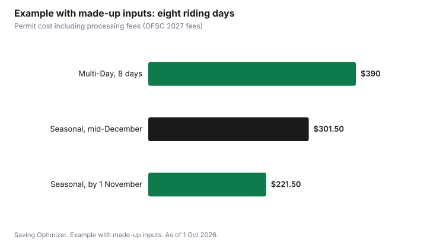

Sports · Canada
Ontario Snowmobile Trail Permits for 2027: Early-Bird Prices, Permit Types and Insurance
For the 2027 season, an Ontario Seasonal snowmobile trail permit costs $214 if bought between 1 October and 1 November 2026, $244 from 2 November to 1 December, and $294 from 2 December onwards, according to the Ontario Federation of Snowmobile Clubs (OFSC). A Classic permit for snowmobiles from model year 1999 or older costs $171.20 until 1 December and $201.20 after. Multi-Day permits cost $45 a day, for at least two consecutive days, and go on sale on 2 December. A $7.50 processing fee applies to each permit, and permits are non-refundable. Before you ride, Ontario also requires a valid licence, proof of insurance, a registration permit and an approved helmet.
Key takeaways
- Seasonal permit for 2027: $214 by 1 Nov 2026, $244 from 2 Nov to 1 Dec, $294 from 2 Dec (OFSC).
- Classic (model year 1999 or older): $171.20 until 1 Dec; $201.20 from 2 Dec.
- Multi-Day: $45 a day, minimum two consecutive days, available from 2 Dec.
- Add a $7.50 processing fee per permit. Permits are non-refundable.
- Ontario requires a licence, proof of insurance, a registration permit and an approved helmet.
- Example with made-up inputs: a rider planning eight days saves by buying a Seasonal permit before 1 November.
Seasonal vs Classic vs Multi-Day permits
The OFSC sells three types of trail permit. The Full Season permit is for snowmobiles from model year 2000 or newer and is valid for the whole winter on all available trails from the date of purchase. The Classic permit is for snowmobiles from model year 1999 or older, based on registration and ownership, and is also valid all season. The Multi-Day permit covers a minimum of two consecutive days, is valid only for the dates chosen, and is available from 2 December.
| Permit | Who it's for | Purchase date | Fee |
|---|---|---|---|
| Seasonal | Model year 2000 or newer | 1 Oct – 1 Nov 2026 | $214.00 |
| Seasonal | Model year 2000 or newer | 2 Nov – 1 Dec 2026 | $244.00 |
| Seasonal | Model year 2000 or newer | From 2 Dec 2026 | $294.00 |
| Classic | Model year 1999 or older | 1 Oct – 1 Dec 2026 | $171.20 |
| Classic | Model year 1999 or older | From 2 Dec 2026 | $201.20 |
| Multi-Day | Any eligible sled; minimum 2 consecutive days | From 2 Dec 2026 | $45 a day |
The OFSC also says you can upgrade a Multi-Day permit to a Full Season permit during the season and receive a credit based on your most recent expired Multi-Day permit purchase. That makes Multi-Day a reasonable start for someone unsure how much they will ride, though it costs more per day than buying a Seasonal permit early.
Early-bird deadlines
The biggest saving is timing. The same Seasonal permit costs $80 more from 2 December than before 1 November. If you will ride more than a few days, buy in October. The OFSC's FAQ says that if you do not yet have the snowmobile's VIN or plate number, you can buy a permit gift card to lock in the early fee, and attach it to the sled later through your permit account.
| Buy by | Seasonal fee | Extra compared with early-bird |
|---|---|---|
| 1 November 2026 | $214 | — |
| 1 December 2026 | $244 | $30 |
| 2 December 2026 or later | $294 | $80 |
Break-even with Multi-Day permits
At $45 a day, Multi-Day permits pass the cost of an early Seasonal permit at five days (5 × $45 = $225, more than $214), and pass the post-2 December Seasonal fee at seven days (7 × $45 = $315). Each Multi-Day permit also carries its own $7.50 processing fee. If you expect to ride five or more days, the early Seasonal permit is cheaper.
Insurance and registration requirements
Ontario's snowmobile safety page says that to drive a snowmobile you must carry a valid driver's licence, a motorized snow vehicle operator's licence (MSVOL) or a snowmobile licence from your home province, state or country, along with proof of insurance and the snowmobile registration permit. Drivers and passengers must wear an approved snowmobile helmet. The OFSC needs a valid VIN and vehicle registration number to issue a trail permit.
| Rule | What Ontario says |
|---|---|
| Documents to carry | Valid licence (driver's licence, MSVOL or licence from another jurisdiction), proof of insurance, registration permit |
| Helmet | Approved snowmobile helmet for drivers and passengers |
| Age 16 or over | With a valid licence: snowmobile trails, across roads and on roadways where permitted |
| Age 12 to 15 | With an MSVOL or licence from another jurisdiction: snowmobile trails |
| Under 12 | Private property only; not permitted on public trails |
| Trail permit | Must be displayed on OFSC trails, including trails on private, municipal and government land |
| Speed on trails | Maximum 50 km/h |
Insurance is a separate cost from the permit. Ask your insurer for a snowmobile quote before the season, and ask whether bundling it with a home or auto policy changes the price. The guide to bundling insurance explains how to compare.
Trail conditions and refunds
Snowmobile trails open only when clubs judge conditions are safe, and a short or poor winter can mean fewer riding days. The OFSC's FAQ says trail permits are non-refundable. That is the risk of buying early: you lock in the lowest price but carry the weather risk. If you ride only in a good year, Multi-Day permits shift that risk back to the season itself, at a higher cost per day.
- Check the OFSC's trail status information for open trails before you leave.
- Ride within the 50 km/h trail limit and slower when conditions require.
- Keep the permit displayed on the sled.
- A replacement or transfer costs $15, according to the OFSC FAQ.
Other provinces' trail passes
Other provinces have their own snowmobile federations and trail passes, with different prices and rules. If you ride outside Ontario, buy the pass for that province or region from its federation, and carry the documents its rules require. An Ontario permit is for OFSC trails.
Example with made-up inputs: one rider's season
These numbers are an example with made-up inputs, except the OFSC fees. A rider with a 2015 snowmobile plans eight days on the trails. Buying a Seasonal permit on 25 October costs $214 plus the $7.50 processing fee, or $221.50. Waiting until mid-December would cost $294 plus $7.50, or $301.50. Buying four two-day Multi-Day permits would cost 8 × $45 = $360 plus 4 × $7.50 = $30, or $390. Insurance is a separate made-up $300 for the season.
| Approach | Permit cost | Processing fees | Total |
|---|---|---|---|
| Seasonal, bought 25 Oct | $214 | $7.50 | $221.50 |
| Seasonal, bought mid-December | $294 | $7.50 | $301.50 |
| Four two-day Multi-Day permits | $360 | $30 | $390 |

Checklist
- Confirm your sled's model year: 2000 or newer for Seasonal, 1999 or older for Classic.
- Buy before 1 November 2026 for the lowest Seasonal fee; buy a gift card if you lack the VIN.
- Arrange insurance and keep proof with you.
- Check your registration permit and licence (or your teen's MSVOL).
- Check helmets for driver and passenger.
- Display the permit and check trail status before each ride.
Sources
- Ontario Federation of Snowmobile Clubs, Frequently Asked Questions (2027 Snowmobile Season permit fees) and Permits pages, ofsc.on.ca, as of 1 Oct 2026. Fees by date and type; $7.50 processing fee; model year rules; Multi-Day minimum and 2 Dec availability; upgrade credit; non-refundable; gift cards; $15 replacement and transfer.
- Government of Ontario, Snowmobile safety, ontario.ca, as of 1 Oct 2026. Documents to carry; helmets; age and licence rules; trail permits; 50 km/h trail limit.
- Break-even figures are arithmetic on OFSC fees. The rider, riding days and insurance amount in the example are an example with made-up inputs.
Frequently asked questions
How much is an Ontario snowmobile trail permit for 2027?
The OFSC lists the Seasonal permit at $214 from 1 October to 1 November 2026, $244 from 2 November to 1 December, and $294 from 2 December. The Classic permit is $171.20 until 1 December and $201.20 after. Multi-Day permits are $45 a day. A $7.50 processing fee applies to each permit.
Can I get a refund on an OFSC trail permit?
No. The OFSC says Ontario Snowmobile Trail Permits are non-refundable.
What do I need to ride a snowmobile in Ontario?
Ontario says you must carry a valid licence (a driver's licence, an MSVOL or a licence from another jurisdiction), proof of insurance and the registration permit, and drivers and passengers must wear an approved helmet. OFSC trails also need a displayed trail permit.
When is a Multi-Day permit cheaper than a Seasonal permit?
At $45 a day, Multi-Day permits cost more than an early $214 Seasonal permit from five days. For one to four days, Multi-Day is cheaper.
Can a 12-year-old ride on Ontario snowmobile trails?
Ontario says riders aged 12 to 15 with an MSVOL or a licence from another jurisdiction can ride on snowmobile trails. Under 12, riding is limited to private property.
Researched and drafted with AI assistance and fact-checked against official Canadian sources. How we create content.
Disclosure: Saving Optimizer may earn a commission if a partner link is added later, such as an insurance or outdoor gear offer type. No partnership with the OFSC is claimed on this page. Education only. Check trail conditions and ride safely.